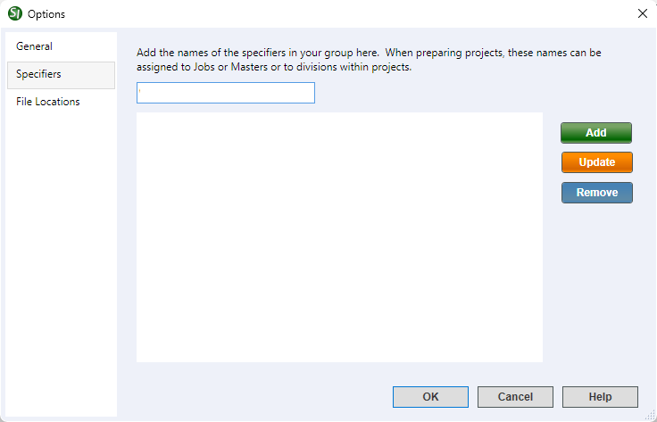

This command can also be executed by using the keyboard shortcut F2.
The Specifiers tab provides the option to create and manage a master list of specifiers that will be available from the Specifiers tab of the Job or Master Properties. From here, you can Add, Edit or Remove specifiers that can be used to designate a specifier for each Division within a project, ensuring that all new Sections added are automatically assigned to the appropriate designer for that Division.
 Click the tabbed commands on the image below to see how to use each function.
Click the tabbed commands on the image below to see how to use each function.

- Add button - Adds a new name entered into the field to the list.
- Update button - Provides the option to edit the selected name.
- Remove button - Deletes the selected name from the list.
Standard Windows Commands
 The OK button will execute and save the selections made.
The OK button will execute and save the selections made.
 The Cancel button will close the window without recording any selections or changes entered.
The Cancel button will close the window without recording any selections or changes entered.
 The Help button will open the Help Topic for this window.
The Help button will open the Help Topic for this window.
How To Use This Feature
To Create A Specifiers List:
- In the SpecsIntact Explorer, perform one of the following:
- Select the Setup menu, select Options, then select the Specifiers tab
- Use the keyboard shortcut F2, then select the Specifiers tab
- Place your cursor in the field and enter a new name
- Click the Add button
- To add additional names, repeat Steps 2 and 3
- Click OK
To Update A Name In the Specifiers List:
- In the SpecsIntact Explorer, perform one of the following:
- Select the Setup menu, select Options, then select the Specifiers tab
- Use the keyboard shortcut F2, then select the Specifiers tab
- In the specifier list, select the name to update
- In the text field, modify the displayed name
- Click the Update button
- Click OK
To Remove A Name From the Specifiers List:
- In the SpecsIntact Explorer, perform one of the following:
- Select the Setup menu, select Options, then select the Specifiers tab
- Use the keyboard shortcut F2, then select the Specifiers tab
- In the specifier list, select the name to remove
- Click the Remove button
- Click OK
Users are encouraged to visit the SpecsIntact Website's Support & Help Center for access to all of our User Tools, including Web-Based Help (containing Troubleshooting, Frequently Asked Questions (FAQs), Technical Notes, and Known Problems), eLearning Modules (video tutorials), and printable Guides.